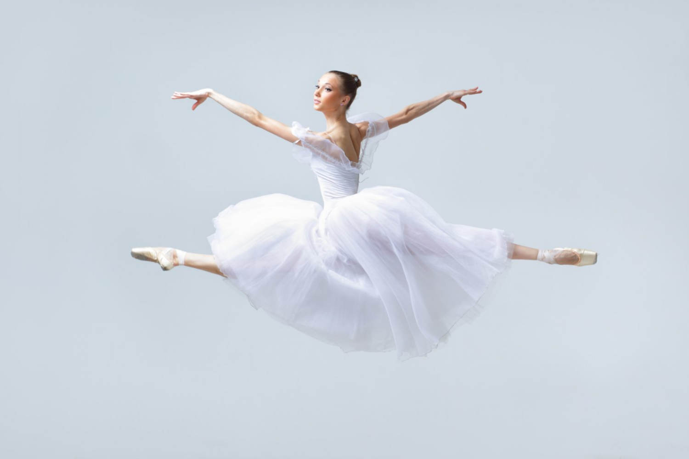

Dia Internacional da Dança |
||
|---|---|---|
O Dia Internacional da Dança é comemorado todos os anos no dia 29 de abril. Assim, a data foi escolhida para homenagear o nascimento de Jean-Georges Noverre, uma das maiores figuras da história da dança, nascido em 1727 e considerado o fundador do ballet moderno. Celebrar o Dia da Dança é uma forma de reconhecer a importância desta arte em todas as suas formas, sejam elas clássicas, contemporâneas, folclóricas ou urbanas. A dança tem o poder de expressar emoções, contar histórias, preservar a cultura e conectar pessoas ao redor do mundo. |
||